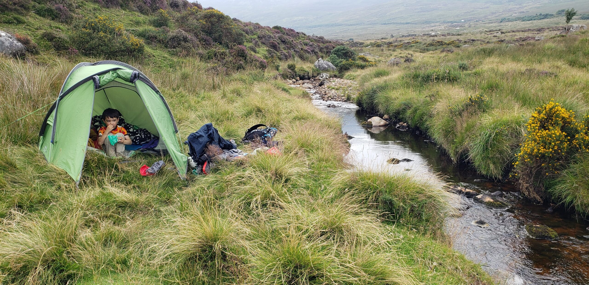

Beaver Scouts
Beavers are our youngest members (6-9yo) and meet for an hour on a Wednesday evening at 6pm in our den on Hyde Rd.
About Beaver Scouts
Beaver Scouts typically meet once a week during school terms. At meetings they play team games and learn Scouting skills like hiking, camping, knots, first aid, cooking and more. Beavers go on outdoor adventures – walks, treasure hunts, one or two night camps, litter-picking, parading on Saint Patrick's Day, slumber parties in hostels or Scout Dens and more.
Children of this age love the outdoors. National events for Beavers include JamÓige – a camp held every four years for Beavers and Cubs. There are also events run at Scout County level and at Scout Province level.
Our Beaver Section meets from 1800 to 1900 every Wednesday.
